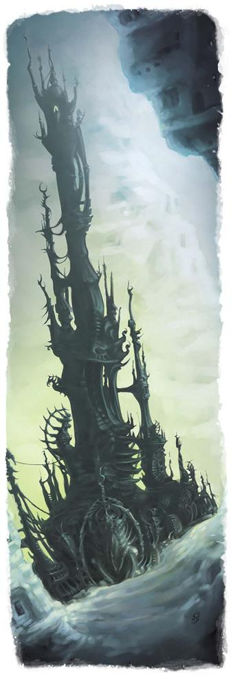

织肉者蒙丹和那些由他所造怪物的故事始终伴随着那些在布鲁兰、安黛尔和艾鲁登荒野长大的孩子们。家长们警告道，蒙丹会偷走那些不听话的孩子，把他们带进他的活化城堡中，并用毫无破绽的拟像取而代之，这样就算他们的朋友也会很快忘记他们。
蒙丹出生于费奥兰家族，后来成为十二学会中最具天赋的法师之一；据说乔拉斯克家族惯用的治疗药水就是蒙丹发明的配方。但是，他对创造和改造生命的痴迷将他引向了黑暗之路，这使得他开始改造异变魔的技艺，同时钻研着苏尔・卡特什的秘辛。有一种说法是，他曾试图用魔法培育出一个新的龙纹家族，但却培育出了一系列异怪，在它们被毁灭之前，他自己的家人也都被异怪吞噬了。
无论这些故事的真相如何，蒙丹都在YK797年被逐出了费奥兰家族。根据萨雷恩・西拉兰・D・西维斯（Salyon Syrralan d'Sivis）的记载，十二学会曾试图处死蒙丹，但最终并没有成功。萨雷恩在文献中称，蒙丹曾被浸在强酸中、被绑在火刑柱上炙烤、被水淹，甚至被肢解，但每次尝试之后，“他都会再次站起来，活力不减，肉体复生”。十二学会随后将他石化，并送往恐惧要塞......但尽管被石化，他还是在到达岛上的监狱之前神秘地逃脱了。萨雷恩推测，"没有哪个
低阶法师能将自己的意志凌驾于蒙丹的肉身之上"。
黑根――蒙丹之塔――在YK873年的银焰远征期间首次被发现。一队安黛尔圣殿骑士曾在安黛尔南部（今属卓姆）追捕几只狼人。几周后，另一支巡逻队遇到了这支部队中的一名幸存者，他神志不清，语无伦次。这名圣殿骑士提到了一座塔楼，“有着像皮囊一样的黝黑墙壁，就像龙的肢体一样扭曲着伸向太阳”。这名士兵并不知道他的同伴们的去向，但他自己的状况证实了他所见到的恐怖景象――他的上半身已经和一只狼人的下半身融合在了一起。他的精神状态迅速恶化，很快就在自残下死去。
如今，蒙丹是科瓦雷现存最强大的法师，他塔楼的周边地区都被布下了防止探知和传送的结界。虽然杜哈拉的圣武士们曾试图消灭这个邪恶的法师和他的造物们，每个国家的使者也都曾在终末战争的某个时刻寻求过蒙丹的帮助；但圣武士和来使们最后都以失败告终，只有少数幸运儿活了下来得以分享他们的故事。蒙丹一直是一个邪恶的谜团，也是卓姆边陲的一个黑暗传说。有些人认为他与索拉・科伦的女儿们达成了某种约定，但也有很多人认为就连鬼婆们也都忌惮蒙丹。
作为科瓦雷最强大的凡人法师，蒙丹可以随心所欲地发挥自己的力量。他擅长于创造和改造生物，但他也能很轻易地就能拥有其他能力。值得注意的是，你可以在艾伯伦世界中用“蒙丹”代替标有“魔邓肯”名称的法术；这样我们就能看到蒙丹私人密室和蒙丹豪宅术，这就表明他具有操纵次元空间的天赋。蒙丹可能会在大陆各处设置一些次元门的出口，让他可以在最符合你故事设定的地点进行实验。
话虽如此，蒙丹使用的并不只是法师和奇械师等玩家角色可能使用的法术。他的技艺脱胎自异变魔和霸主，其中还涉及了引导奇斯瑞和瑟奥瑞特的能量；本章稍后介绍的“织肉者蒙丹”数据面板给出了他在战斗中可能会使用到的力量的例子。虽然蒙丹可以随心所欲地影响他的实验对象，但他的大部分魔法只能在黑根中施展，而黑根本质上就是一台巨大的超凡奇械（Eldritch Machine）。很有可能，经过几个世纪的努力，他本质上已经变成了黑根――他的肉身只是他创造出来与凡人互动的躯壳，而真正的蒙丹已经与他的高塔融为一体。这是限制他影响力的一种方法，也是他与冒险者们合作的一个理由。虽然他的塔位于危险区域内，但他的位置却众所周知，所以冒险者们知道在哪里可以找到他。
边栏：蒙丹？还是异变魔？Mordain or Daelkyr?
蒙丹在战役中的作用与异变魔有何不同？为什么要使用他而不是腐化者迪恩（Dyrrn the Corruptor）？答案很简单。首先，蒙丹的影响没那么大。他没有遍布整个大陆的邪教或爪牙。此外，异变魔虽然神秘，但破坏力却毋庸置疑；如果任其发展，他们将会毁灭文明世界。另一方面，蒙丹并不想毁灭文明；他的实验规模较小，附带损害通常是偶然的，而不是有意为之。最后一个关键因素是，蒙丹是一个古怪的反社会者，但他并不像异变魔那样是彻头彻尾的异形。你可以和蒙丹进行真正的交流――你可以和他探讨他最近在做的实验，他会很乐意为你在最近冒险中发现的百足魔兽内脏付钱。他声名狼藉，杀人如麻，但他比异变魔更理性，他的计划一般也更有针对性。 |
蒙丹拥有无与伦比的奥术力量，却全然不顾他人的感受。同时，他对财富或者施加影响毫无兴趣――他并不想征服科瓦雷，虽然他对自己的创造物可能造成的苦难无动于衷，但他并不想伤害他人。作为DM，你可以决定蒙丹是否想要报复龙纹家族，毕竟是他们驱逐了他；但默认情况下，他认为龙纹家族就像五国一样毫无意义、与己毫不相干。他只关心自己的工作――创造和完化生命。有鉴于此，蒙丹可以通过几种不同方式参与到战役中来。
虽然在艾伯伦充斥着各种重大阴谋，但蒙丹对科瓦雷并没有什么宏大的计划，这使他成为了某个必须处理但不会造成长期影响的一次性问题的绝佳来源。虽然他很少离开他的塔楼（假设他能离开的话），但他会使用探知和传送法术对全科瓦雷的目标进行实验。请考虑以下选项：
感染Contagion。蒙丹可能会制造一场魔法瘟疫，在一个与世隔绝的村庄里传播，并观察会发生些什么。冒险者们能找到解药吗？也许他正在试验一种新的兽化症：但它与传统的兽化症又有何不同？
捕食者Predator。蒙丹可以将一种危险的怪物作为一个单独的威胁引入某个地区，很可能仅只是为了看看事态会如何发展。如果你想在安黛尔的中心地带投放一个酒馆大小的凝胶怪，那就怪到蒙丹头上吧。
侵扰Infestation。蒙丹还能为某个地区带来大量怪物――可能是把整个村庄变成地刺虫或者一队雪人的巢穴。受害者还能复原吗？如果不能，冒险者们能找到稳定局势的办法吗？
神秘降临Enigmatic Arrival。蒙丹创造的不一定是怪物。他可以把一个村庄的居民变成乌龟，或者制造一个天狗杀人狂。这可以是一个简单的方法，将一小部分不寻常的生物引入一个地方（可能会为玩家角色创造一个起源故事，下一节会提到）；没有人知道蒙丹为什么要将斑猫人部落放入国王森林，但他确实这么做了。
实验继续Ongoing Experiments。冒险者可能会偶然发现其他奇异的实验。杜鲁尔之曦（最初出现在龙杂志第365期）是位于卓姆的一个与世隔绝的村庄，蒙丹在这里重塑了历史上的传奇人物。目前还不清楚他这样做的原因，但对于冒险者来说，这是一个有趣的地方。
幕后黑手Hidden Hand。蒙丹可能为冒险者们正在对抗的势力提供物资或支持。他可能会提供共生体或其他魔法物品，也可能会让他们接触怪物般的力量（你杀死了该组织的首领，但一周后他以血肉魔像再次回归了！）。这里的主要问题是为什么？这个组织对蒙丹有什么意义或作用？
私人兴趣It’s
Personal。蒙丹甚至会对冒险者产生私下的兴趣。他会把他们的朋友变成怪物，还是会赋予他们的敌人奇特力量？他是在测试冒险者，还是他们身上有什么东西对他的实验构成了威胁？他是否知晓了某些冒险者们尚未发现的事情？
蒙丹可以作为不寻常的玩家角色的有趣背景故事元素。也许玩家想创建一个角色，但他这一族在艾伯伦中并不存在，比如象族或析米克混生体(译注：这两个种族见拉尼卡公会指南）。答案很简单：他们是由蒙丹创造的。
同样的方法也可以解释某些职业特征：也许一个法师的奥术力量源自蒙丹的魔育能力。玩家可以使用半兽人野蛮人的面板数据，但可以把他们的角色描述成蒙丹创造的人造生命体，而他们的“狂暴”则以进入一种极具破坏性的战斗模式体现出来。武僧可以把他们的“无甲防御”和强化能力归功于蒙丹制造的变异体。或者，某个角色可能与杜鲁尔之曦有联系；他们可能是某个著名历史人物的克隆体，也许是征服者坎恩或重生的提拉・麦伦......甚至是织肉者蒙丹的年轻态克隆体！
对于这些想法，都有几个关键问题。这些角色是作为一个独立的事件被创造出来的，还是一个更大的实验（如杜鲁尔之曦）的一部分？他们是被蒙丹放生到野外，还是从囚禁中逃脱？他们知道自己被创造的目的吗？――他们是在反抗这个目的，还是他们的冒险生涯本就是蒙丹计划的一部分？
蒙丹可以提供很多东西，从魔法物品到神秘恩惠。他可以很容易地成为术士的宗主或法师的神秘导师......甚至是整个团队的赞助人（效仿《艾伯伦：从终末战争中崛起》中的不朽者作为团队赞助人的模式，虽然他可能并非不朽者）。
与蒙丹共事应该不是一个愉快的体验。他总是给人一种非常危险的感觉，随时都可能做出可怕的事情。但同样，蒙丹的动机完全是为了他的实验；只要当前的实验没有伤害无辜，他就没有理由不成为一个有用的盟友。以下是他可能希望冒险者做的几件事：
损伤控制Damage Control。蒙丹希望冒险者为他收拾烂摊子。使用与“反派蒙丹”部分的相同故事，但是，蒙丹会派遣冒险者将附带损害降到最低。他仍然觉得有必要把一个巨大的凝胶怪扔到安黛尔，一旦他得到了自己需要的，他会很乐意让冒险者们去处理剩下的事情。
两害相权取其轻Lesser of Two Evils。黄泉巨龙教、砂主、黑暗梦境或类似势力可能会干扰蒙丹的某个实验。他会派冒险者去解决这个问题。
器官捐赠者Organ Donors。冒险者们遇到了许多稀有生物。蒙丹希望他们从击败的怪物身上摘取器官，并为那些不寻常的发现支付报酬（金币或其他方式）。
寻找共生体Searching for Symbionts。蒙丹总是对异变魔的遗物感兴趣，他可能会让冒险者进入危险的地下城去寻找共生体或其他异变魔的造物。
巧舌如簧Silver Tongues。蒙丹可能会让冒险者们去调解他与某些卓姆邻居的地方事务......这很可能是在他以一种可怕而致命的方式亲自解决问题之前的最后通牒。
一般来说，蒙丹这个角色是怪物和其他威胁的缔造者。他本人其实并不打算充当怪物的角色，因为他作为幕后主使，不想卷入有损尊严的肢体冲突。尽管如此，一个故事可能会涉及到与蒙丹的战斗，这里也提供了关于他的面板数据......但打败蒙丹和杀死他是两项截然不同的任务。
蒙丹的一个显著特点是他不可能被杀死。十二学会俘虏了他，但即使他们动用了所有资源，也无法将其消灭。你可以这么想：通过他的努力，蒙丹实质上已经成为了一件有生命的神器，和其他神器一样坚不可摧？――包括不受湮灭之球的影响！那么，如果冒险者们必须杀死蒙丹，他们能做哪些十二学会当年无法做到的事情呢？冒险者们能否通过对付守门人卡塔什卡（Katashka the
Gatekeeper）或玛伯尔的骸骨之王（Bone king of Mabar）获得杀死他的力量？他的过去是否有什么秘密会暴露他的弱点――他是否会被自己的血脉或自己的造物杀死？就像神器一样，肯定有某种方法可以摧毁蒙丹，但了解这种手段并付诸实践将是一项史诗般的挑战。
经过数个世代的努力，蒙丹已经将黑根周围的森林改造得面目全非。卓姆人称其为“血肉之森”，而这并不仅仅是一个夸张的别称。很久以前，蒙丹创造了织皮者――一种和蜘蛛一样，以受害者的肌肉和内脏织网的异界生物。森林中充满了各种奇异的动植物，既有来自其他生态环境的阴森恐怖的自然造物（例如通常只有在地底才能发现的磷光植物），也有蒙丹的那些完全非自然造物。冒险者们可能会遇到长着翅膀的巨魔、吟唱着诱惑之歌的鸟妖，或者长着美杜莎的脑袋、并拥有其致命能力的刺尾狮。就像织皮者一样，这些造物中的一些已经在该地区占据了广阔的领地，但在大多数情况下，血肉之森中充满了奇异而独特的遭遇。
黑根塔是蒙丹的据点，也是他最强大的武器。黑根塔由木材、岩石和皮肉混合而成，令人望而生畏；与其说它是由蒙丹所建造，不如说是蒙丹植栽的。这座可怕的建筑异常坚固。它的墙壁像钢铁一样坚固，且受到损伤后会迅速再生。黑根的墙壁无法被传送术穿越，探知法术也无法穿透。
遥遥望去，黑根塔是一座气势恢宏的建筑，但它的内部空间更为庞大；塔内有几个类似豪宅术的次元空间。冒险者可能会穿过一扇本应进入一个小房间的地方，结果却发现自己来到了一个巨大的储藏室或一个巨大的动物园，里面都是蒙丹创造并遗弃的生物。
蒙丹有可能已经进化得超越了类人形态，而本质已经成为了黑根。如果是这样的话，他对塔中的一切都有一定程度的感知――不过就像大多数人类并不清楚自己身体里随时都在发生着什么一样，需要引发一些重要的事件才能引起他的注意。
在黑根塔内，蒙丹可以进行巢穴动作。以固定值20参与先攻检定（等值时视为后手），蒙丹可以发动一个巢穴动作，造成以下效果之一；但不能连续两轮使用同个的效果：
展现复体。蒙丹以魔法制造出他所能看到的另一个生物的替身，并将替身放置在巢穴内任何未被占据的位置中；每个生物一次不能拥有超过一个替身。替身的数据与蒙丹创造替身时的生物数据相同，但替身只有1点HP，并且不能执行动作或反应动作。每当一个生物进行攻击、施法、借机攻击或其他行动时，它可以选择从自己的位置或替身的位置执行动作，就如同该生物处于该位置一样。生物可以在其回合内以自身具有的速度移动其替身，无论该生物是否在他的回合内已经移动过。在该生物的回合中，如果它没有失能，它可以用魔法传送到替身的位置，与替身交换位置。此外，蒙丹还可以用魔法强行操控替身的移动，在该生物回合结束后立即将该生物的替身以其自身具有的速度进行移动，和/或在该生物回合中的任何时候使用自己的反应动作，将该生物以魔法传送到替身的位置，使彼此位置交换。
无限自我。蒙丹可以在他巢穴内任何未被占据的位置上以魔法创造出一个自己的替身；他最多可以同时拥有三个替身。这些替身遵循的规则与其他通过“展现复体”制造出的替身相同，他可以选择将自己的行动分配给这些替身，但他不能强行操控自己的替身移动。
|
织肉者蒙丹Mordain the Fleshweaver 中型异怪, 中立邪恶 护甲等级：16 (法师护甲) 生命值：136 (13d8+78) 速度：30尺 力量14(+2) 敏捷17(+3)
体质23(+6) 智力22(+6)
感知14(+2)
魅力18(+4) 豁免：体质+12, 智力+12, 感知+8 技能：奥秘+18, 医疗+8, 自然+12, 察觉+8 伤害抗性：毒素；非魔法钝击、穿刺与挥砍 状态免疫：疾病 感官：黑暗视觉60尺，被动察觉18 语言：通用语，深潜语，精灵语，鬼怪语 挑战等级：18 (20,000 XP) 额外熟练：+6 不灭肉身Abiding Flesh。蒙丹在进行死亡豁免时会自动成功，并且不会因为受到伤害而死亡。 精类血统Fey Ancestry。蒙丹在对抗魅惑时具有优势，不会因为魔法效应陷入睡眠。 织肉者永生Fleshweaver’s Immortality。当蒙丹的传奇抗性至少还剩一次时，他的HP不会降为 0。 传奇抗性Legendary Resistance （3次/天）。蒙丹可以将一次失败的豁免鉴定改为成功。 大炼金师Master Transmuter。蒙丹可以用魔法将一个不大于5立方尺的非魔法物品转化为另一个大小、质量相似且价值相同或较低的非魔法物品。他必须花10分钟处理该物品才能将其转化。 自我控驭Mastery of Self。当蒙丹处于麻痹、石化、眩晕或昏迷状态时，他的速度降至0，但他不会陷入失能，而且仍可以在自己所处的位置行动（例如，他可以在昏迷时攻击，但不能移动到其他位置）。如果蒙丹受到寒冷或光耀伤害，直至他下一回合结束前，此特质将失效。 隐匿面纱Veil of Nondetection。蒙丹无法成为任何探知魔法的目标，也无法被魔法探知装置感知到。 动作 多重攻击Multiattack。蒙丹发动一次螫刺触手攻击和一次溃烂射线攻击。 螫刺触手Stinging Tentacle。近战武器攻击：命中+9，触及10尺，单一目标。命中：14（2d10 + 3）点挥砍伤害和11（2d10）点毒素伤害。 溃散射线Unraveling Ray。远程法术攻击： 命中+12，范围120尺，单一目标。命中：16（3d6+6）点黯蚀伤害，目标必须通过DC 20的强韧检定，否则会受到诅咒。被诅咒的生物在每个回合开始时都会受到10点黯蚀伤害。该生物可以在每个回合结束时重复该检定，如果成功则效果结束。 壮丽实验Magnificent Experiment （3次/天）。蒙丹选择他视野范围60尺内的两个生物，强制对他们进行一次可怕的魔法融合实验。每个目标都必须进行DC20的体质豁免检定，检定失败会受到21（6d6）点黯蚀伤害，检定成功则会受到一半的伤害。如果其中至少有一个目标失败，那么这两个目标都会受到蒙丹实验的影响（即使另一个目标豁免成功）；只有使用移除诅咒或类似法术才能逆转这些影响。蒙丹使用此行动时，可从以下实验中选择一个： 可怖融合Horrific Merger。一个目标被传送到另一个目标的位置，然后这些生物相互融合。这些生物可以独立行动，但共享同个位置。每当一个生物移动时，另一个也会被拖动。两个生物对所有伤害都具有抗性，但每次其中一个生物受到伤害时，另一个生物也会受到相同程度的伤害。 自体对换Exchange of Self。两个目标都会被变形为其中一个目标的初始形态。这些目标的力量、敏捷和体质、HD、生命值和最大生命值都将变为目标生物的。 共鸣离散Sympathetic Discorporation。两个生物交替闪现或消失。蒙丹选择其中一个目标，该生物会立即从当前存在的位面消失，并出现在以太位面，如同受到闪现术的影响一样。在每个生物的回合结束时，它必须掷一次d20。如果掷出11或更高，它就会与另一个目标交换位面；原本在以太位面的目标消失并出现在另一个目标所在的位面，而原本在另一个位面的目标消失并出现在以太位面。当目标变换位面时，每个目标都会回到其所选择的、在其消失的位面 10 英尺范围内可以看到的未被占用的位置。如果该范围内没有空位，则会随机出现在离其消失的位置最近的空位。如果两个目标都出现在以太位面，该效应就会终止。 施展法术Spellcasting。蒙丹的施法能力基于智力（法术豁免DC 20）： 随意施展：法师之手、修复术、传讯术、魔法伎俩 每日2次：活化物件、石化术、法师护甲、变形术、虹光喷射 每日1次：完全变形术、真知术 传奇动作 蒙丹可以从以下3个传奇动作选项中进行选择。每次只能使用一个传奇动作，并且只能在其他生物的回合结束时使用。蒙丹在他的回合开始时会恢复使用传奇动作的机会。 快速打击Rapid Strike。蒙丹进行一次蛰刺触手或溃烂射线攻击。 重塑肉身Reform Flesh（消耗 2动作）。蒙丹恢复 16（3d10）点HP，并在下一回合结束前在力量、敏捷和体质豁免上获得优势。蒙丹在丧失行动能力时无法使用此传奇动作。 易变体态Fluid Form（消耗 2 动作）。蒙丹神奇地变为另一种生物的形态，直到他的下一回合结束。新形态可以是任何等于或低于蒙丹挑战等级的生物。蒙丹保留自己的面板数据，但会获得所选形态的体型和速度。此外，他还可以选择一种该生物可用的动作。作为传奇行动的一部分，他可以立即使用该动作，只要他还保留着所选形态，他就可以在自己的回合中再次使用该动作。 |
――――――――――――――――――――――――――――――――――――――――
边栏：蒙丹之手？
维克那之手和维克那之眼是经典神器――传奇大法师的断手和残眼，坚不可摧，蕴含无穷力量。艾伯伦正统中并不存在维克那，但蒙丹是一位传奇大法师，他既以不坏不灭广为人知，又喜欢任何与骇人肢体有关的东西......那么为什么不把这些神器与蒙丹联系起来呢？有几种方法可以做到这一点： Ÿ 十二学会之前试图消灭他时，虽然没能杀死他，但却砍下了他的一只手，挖出了他的一只眼睛。这些东西被保存在十二学会的保险库中......直到它们被偷走并流落到世间。蒙丹想要找回它们吗？ Ÿ 蒙丹摘除了自己的手与眼，并将它们送到了外界......用于科学研究！ Ÿ 战役开始时，蒙丹已被史诗英雄（或奸诈的副手）杀死。眼睛和手是他的全部遗物。但蒙丹是真的被杀死了，还是这一切都只是他计划的一部分？ |
艾伯伦的核心原则之一即是 "泛魔，而非高魔"，在五国中，超过 5 环的法术鲜为人知。那么蒙丹是如何拥有如此强大的力量的呢？而且更重要的是，为什么他没有对五国的生活产生更大的影响？为何无人效仿他的做法？
归根结底，蒙丹是一个传统的反派。从逻辑上讲，他不愿参与这个世界的构建；如果他理智、通情达理，愿意将自己的技能传授给瓦塔利斯家族，那么科瓦雷将会是一个更美好的地方。相反，他却在引导普通奇械师和法师无法理解的力量，并将其用于危险而自私的目的。
除此之外，这些力量无法轻易复制，而且代价惨重。通过他的实验，他已经变成了一个异怪，他可能已经被黑根束缚住，无法脱身。因此，即使阿卡尼克斯有人可以复制他的能力，他们可能也不愿意；任何能掌握他的技术的人都可能在这一过程中丧失人性。
也许有人会问，为什么阿贡尼森的巨龙们没有对蒙丹下手？难道他们不担心如此强大的法师吗？简而言之――并不担心。除非人类威胁到阿贡尼森或巨龙预言，否则阿贡尼森通常不会理睬人类，而蒙丹似乎也没有做到这一步。他试图制造新的龙纹（但失败了）；如果他成功了，他们或许会提起兴趣，就像他们在沃尔一脉成功制造出顶级龙纹后采取的行动一样。但即使以沃尔为例，麻烦也是在精灵和他们的盟友成功制造出龙纹之后才开始的。巨龙们并不会在每个法师的身后龙视眈眈，也不会立即杀害那些高级的冒险者。蒙丹的技艺令人印象深刻，但与巨龙用来摧毁希恩德瑞克的史诗魔法相比，它们还不够格。他在科瓦雷是个大人物，但他并没有做出任何对阿贡尼森构成严重威胁的事情。
